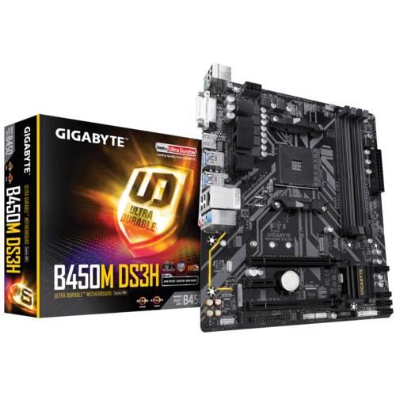
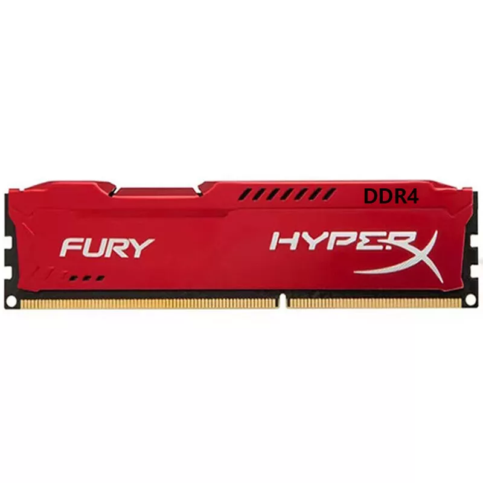
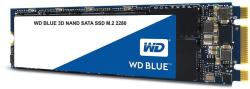

Számítógép alkatrészek bemutatása
Ez az oldal a saját otthoni számítógépem 2020-as állapotát írja le. A mai állapotáról ezen az oldalon írtam.
Processzor: AMD Ryzen 3 2200G
- Kiadási dátum: 2018
- 4 mag és 4 szál
- 4MB L3 Cache
- AM4 foglalat
- Van beépített grafikus lehetőség
Videókártya: Nvidia GTX 1650

- Kiadási dátum: 2019
- Memória típusa: GDDR5
- Memória méret: 4GB
- Csatlakozó: PCI-E 3.0 x16
- DirectX 12
Alaplap: Gigabyte B450M DS3H

- Kiadási dátum: 2018
- Processzor Foglalat: AM4
- DDR4, 4DB DIMM
- Van lehetőség processzor grafikájának használatára
- M.2 Csatlakozó SSD-hez
Memória: Kingston HyperX

- Kapacitás: 16GB
- Típus: DDR4
Tárhely:

- Kiadási dátum: 2017
- Méret: 500GB
- M.2 csatlakozó
- Méret: 1000GB
- Sata áram és Sata data csatlakozó